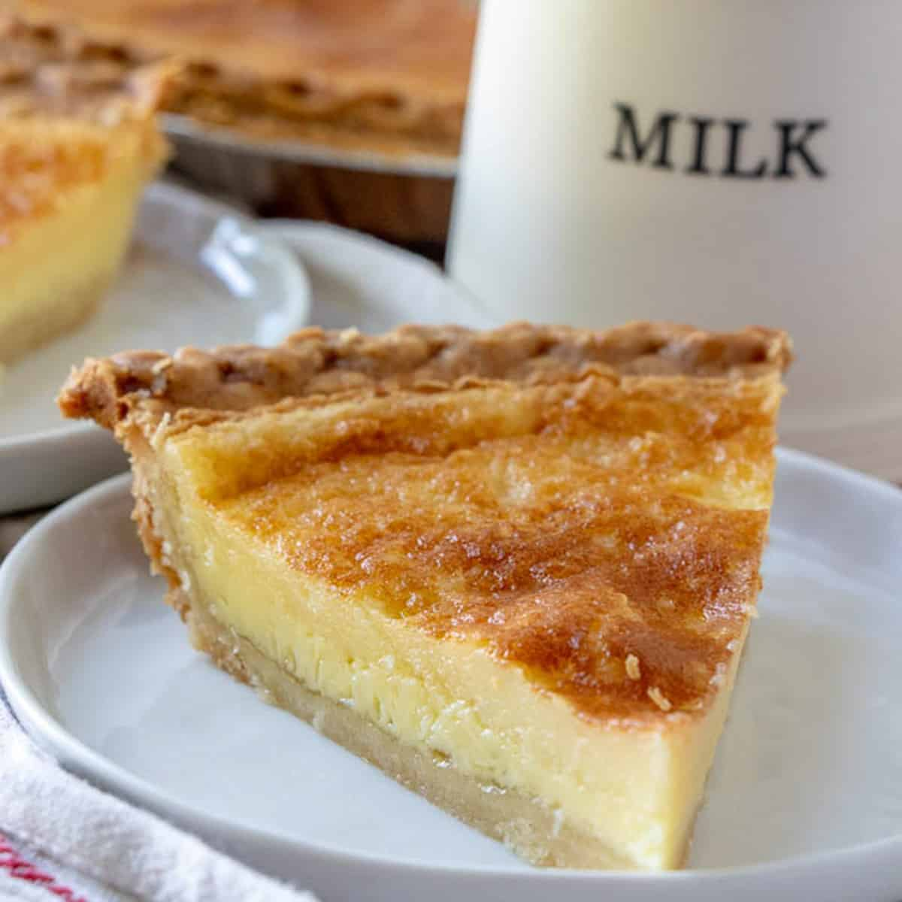

Return to Home

Description
A tasty, simple pie that will remind you of home. Recipe makes two pies, so make sure to invite over all your friends to have some!
Ingredients
- 2 cups of sugar
- 3 eggs
- 2 heaping tablespoons of flour
- 1/4 teaspoon of cinnamon or nutmeg
- 1 stick of margarine, melted
- 1 cup of buttermilk
- 2 pie crusts
Steps
- Preheat oven to 350 F.
- Mix together sugar, flour, and cinnamon/nutmeg.
- Add melted butter, eggs, and buttermilk to the previous ingredients and mix well.
- Pour the mixture into the pie crusts and bake in a 350 F overn for 45 minutes.